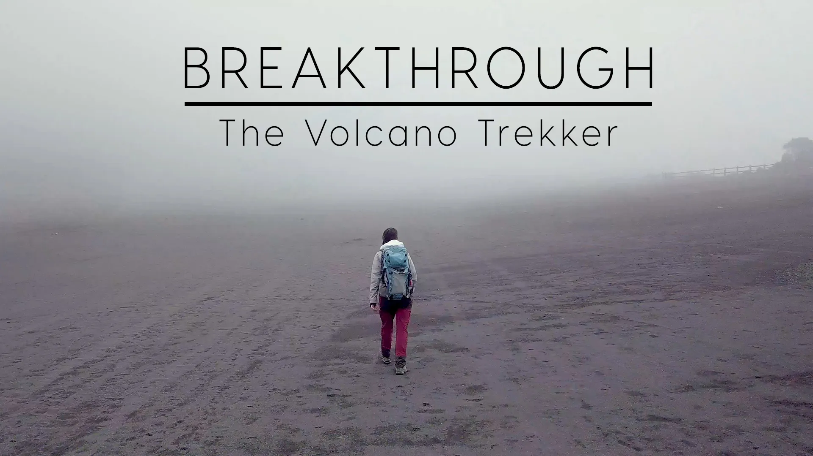
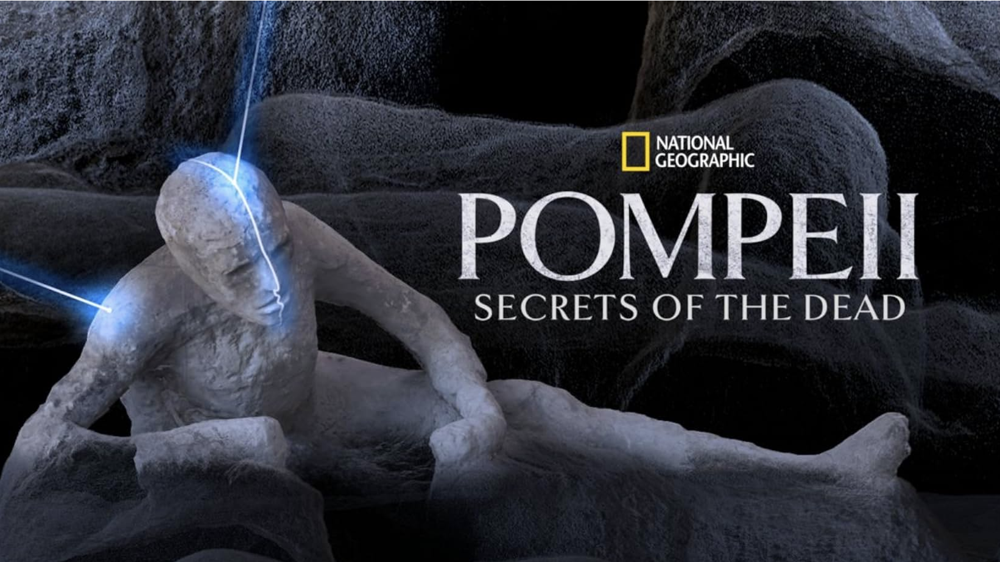
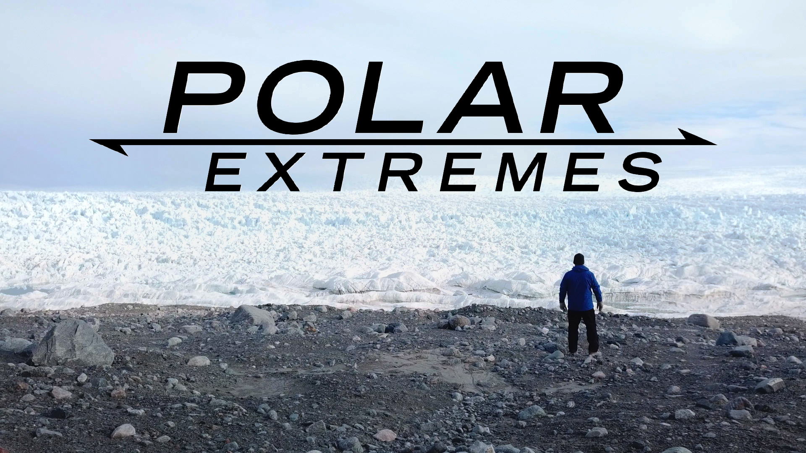

Documentaries
Science on screen — from active volcanoes to ancient eruptions.
Expedition: Volcano
Two-episode series detailing an expedition of several international scientists into two volcanoes in the DR Congo.
In the heart of Africa, deep in the Congo, is one of the most spectacular volcanoes on Earth — Nyiragongo. This spectacular volcano contains a massive boiling cauldron of molten rock — the world's largest continually active lava lake. But it is also one of the most dangerous volcanoes on the planet.
An international and local team of scientists mounted a major expedition to study the volcano, attempting to discover the warning signs that it is building towards a new eruption. The team took around four tonnes of climbing equipment, scientific instruments and supplies up to the crater rim, then descended 350m down a potentially deadly rockface to camp right next to the lava lake.

Breakthrough: Portraits of Women In Science
We notice volcanoes when they erupt. But the geologic precursors of these giant eruptions are less obvious. To learn more about when and why these catastrophic events occur, scientists study the gases and rocks inside of volcanoes.
Volcanologist Kayla Iacovino conducts research on volcanoes from Costa Rica to Antarctica — and now, is even looking to other planets. She explains how the gases and crystals released by volcanoes provide important clues into why volcanoes erupt.

Pompeii: Secrets of the Dead
Available on National Geographic on Disney+.
At the height of the Roman Empire, an eruption of Mount Vesuvius buries the town of Pompeii in volcanic ash, killing thousands. Forensic experts investigate a group of victims for the very first time. X-rays reveal ages, injuries suffered and even artifacts; the investigation also reveals why they failed to escape.

Polar Extremes
Aired on PBS NOVA in February 2020.
In this two-hour special, renowned paleontologist Kirk Johnson takes us on an epic adventure through time at the polar extremes of our planet. Following a trail of strange fossils found in all the wrong places, Johnson uncovers the bizarre history of the poles, from miles-high ice sheets to warm polar forests teeming with life.
Biology Meets Subduction
In February 2017, 25 researchers from six nations met in San Jose, Costa Rica for a 12-day sampling expedition across the Costa Rica volcanic arc. Members of the four Deep Carbon Observatory Science Communities conducted a scientific investigation at Costa Rican volcanic sites through the lenses of biology, chemistry, physics, and geology. This multidisciplinary view is affording researchers from different fields the unique opportunity to work side by side, sharing their insights, and asking questions to achieve a broader picture of the role of carbon in this active volcanic arc.